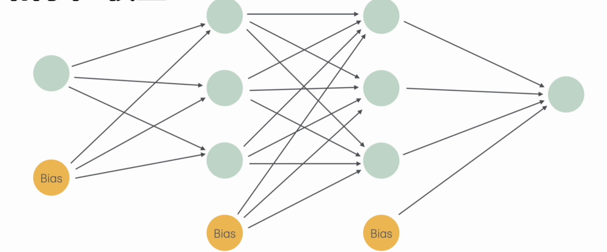

神经网络

神经网络与前向传播算法
仿照神经元多树突单轴突的结构，建立激活单元结构Activation Unit (AU)。作为简化模型，我们假设它具有层状结构，并遵循条件独立性假设（只与其父节点相关）。
我们称从输入特征计算到输出的算法为ForwardPropagation，除了开头的InputLayer和结尾的OutputLayer，一般的传播分两步：
- 第 $L$ 层的 $S_L$ 个神经元输出构成输出向量，通过一个 $S_L times S_(L+1)$ 矩阵转换为于 $S_(L+1)$ 对应的向量
- 在得到的向量上添加一个Bias偏置项 $vb(b)$ ，然后通过一个非线性函数，就得到第 $L+1$ 层的输入
（非线性的必要性：不然多层和单层没有本质区别，不能处理复杂问题）
代价函数与反向传播算法
假设神经网络的训练样本有个 $m$ ，每个包含一组输入 $vb(x)$ 和一组输出信号 $vb(y)$ ， $L$ 表示神经网络层数， $S_i$ 表示每层的neuron个数($S_l$表示输出层神经元个数)， $S_L$代表最后一层中处理单元的个数。
首先将神经网络分两类：
- $S_L=1,y=0,1$ ，二类归类；
- $S_L=k,quad y_i=1$ 表示分到第 $i$ 类的 $K$ 类归类。